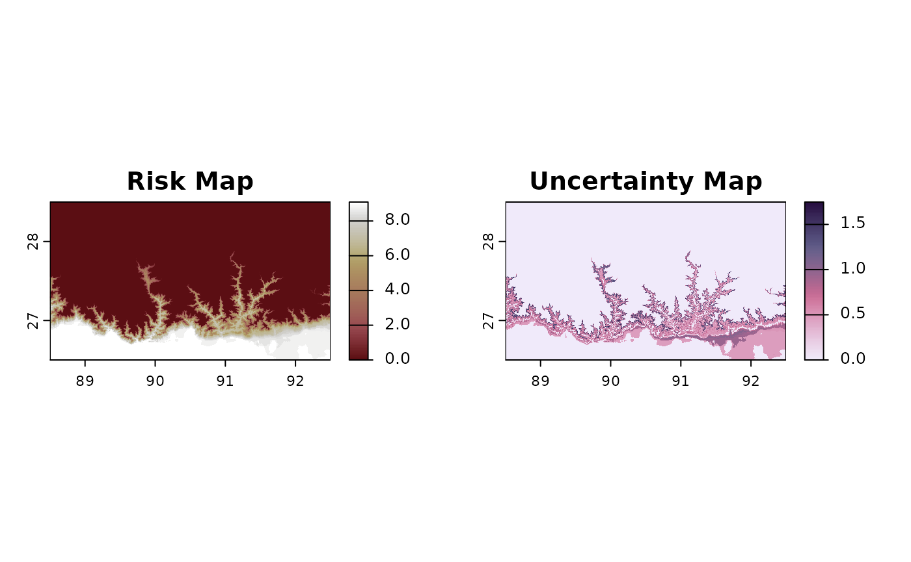

Generating risk maps for pest development
Overall approach and ecological meaning
mappestRisk aims to provide an easy-to-use modelling
workflow for producing pest risk maps.
Development rates variation across temperatures has been largely used to produce risk maps of pest occurrence, usually maps of annual generations for arthropod crop pests based on linear models (see e.g., (Health (PLH) et al. 2017)). Despite more complex approaches have been recently used for pest risk assessment based on biological responses to temperature(Health (PLH) et al. 2023), nonlinear TPC modelling of development rates variation across temperatures, already available after decades of experimental data collection, can help inform pest risk assessment throughout multiple crop pests1.
The approach followed by mappestRisk is inspired by the
one developed by Taylor et al. (2019).
These researchers compose a mathematical model through TPC model fitting
that describes the temperature-dependence of huanglongbing transmission
from Diaphorina citri to citrus plants. Given that this model
theoretically approximates the fundamental thermal niche of the species,
they project throughout citrus growing regions how many months per year
have average temperatures that result optimal for transmitting the
virus. This index (number of high risk months) results extremely helpful
for policy making, since it reduces sources of uncertainty in the
communication field by using a direct, applied measurement (Simmonds et al. 2022).
Given the major contribution of development rate TPCs to ectotherms’ fitness(Pawar et al. 2024; Amarasekare and Savage 2012) and thus likely on fundamental thermal niche, here we suggest applying a similar framework in a simpler way to calculate how many months per year are optimal for a population to maximize its development.
Calculate the Thermal Suitability Boundaries
In order to obtain thermal suitability boundaries or limits defining
the TPC region where development is maximum, the package incorporates
the therm_suit_bounds() function.
This function has as input the tibble obtained after
using the predict_curves() function, either with- or
without uncertainty propagation. Note that only one model can be used
for calculating thermal suitability boundaries at a time. Additionally,
it has a suitability_threshold argument to allow the user
to specify which quantile of the TPC is being used. In other words, a
suitability_threshold = .75 will calculate the two
temperature values at which the TPC predicts a value
, one at each side of the TPC peak. If multiple TPCs are given due to
setting the predict_curves() argument
propagate_uncertainty to TRUE, two boundaries
will be calculated for each TPC. This function outputs a
tibble with the thermal suitability boundaries for each
curve.
Note that setting suitability_threshold to
0 will yield the thermal limits of the complete TPC, i.e.,
the
and the
.
While the map resulting from default (.75) or similar threshold measures
indicates severe risk (populations may rapidly develop), maps from
permissive measures such as critical thermal limits may rather indicate
risk of the pest to find a refuge in the selected region.
Here we provide a example2:
#fit previously:
data("aphid")
fitted_tpcs_aphid <- fit_devmodels(temp = aphid$temperature,
dev_rate = aphid$rate_value,
model_name = c("briere2", "lactin2"))
#predict curves previously
preds_boots_aphid <- predict_curves(temp = aphid$temperature,
dev_rate = aphid$rate_value,
fitted_parameters = fitted_tpcs_aphid,
model_name_2boot = c("briere2", "lactin2"),
propagate_uncertainty = TRUE,
n_boots_samples = 10)
boundaries_aphid <- therm_suit_bounds(preds_tbl = preds_boots_aphid,
model_name = "lactin2",
suitability_threshold = 80) The output has the following aspect:
print(boundaries_aphid)
#> # A tibble: 11 × 6
#> model_name suitability tval_left tval_right pred_suit iter
#> <chr> <chr> <dbl> <dbl> <dbl> <chr>
#> 1 lactin2 80% 21 31.3 0.114 1
#> 2 lactin2 80% 21.8 32.5 0.113 10
#> 3 lactin2 80% 21.5 31.9 0.113 2
#> 4 lactin2 80% 22.3 31.7 0.121 3
#> 5 lactin2 80% 21.2 31.6 0.113 4
#> 6 lactin2 80% 22.3 32.2 0.116 5
#> 7 lactin2 80% 22.1 31.9 0.114 6
#> 8 lactin2 80% 21.8 32.2 0.113 7
#> 9 lactin2 80% 21.1 32.4 0.115 8
#> 10 lactin2 80% 22.3 31.6 0.114 9
#> 11 lactin2 80% 21.5 31.8 0.113 estimateProject a risk map
Given the fitted TPCs and their calculated suitability thermal
traits, mappestRisk enables to automatically generate
rasters –terra::SpatRaster– at the targeting region to
forecast summarizing the number of months per year with highly suitable
temperatures for pest development.
This can be done with the function map_risk()
The workflow of the function is as follows:
-
Extract temperature data: When no temperature
raster is provided by the user in the
t_rastargument (defaultNULL),map_risk()automatically downloads temperature data from WorldClim historical data set usinggeodata(Hijmans et al. 2024) package, consisting in average temperature at monthly time resolution and a user-defined spatial resolution throughresargument –our function uses 2.5 resolution or ~4.625km at the equator by default. If theregionargument is a string with any country name available indata(country_names), the function callsgeodata::worldclim_country(). Alternatively, if theregionargument is either aSpatExtent, a vector with the numeric boundaries of this spatial extent or asforSpatVectorobject –i.e., polygons, themap_risk()function will download data for the entire world usinggeodata::worldclim_global()3. -
Spatial operations: Once the temperature raster is
available (either through user-input in
t_rastor by downloading from WorldClim), themap_risk()function operates usingterraR package for spatial operations such as cropping the data to the target region spatial extent and masking (ifmask = TRUE). Next,map_risk()uses the input of the argumentt_vals–which has to be atibbleexported fromtherm_suit_bounds()– to assign a value of1at those cells with monthly temperatures within the interval given bytherm_suit_bounds()or0if not, yielding a raster with 12 layers (1 for each month) with0’s and1’s. Then, it automatically sums those values for each cell across the 12 layers to give a finalSpatRasterwith one layer whose values vary between 0 or 12, indicating the number of months per year with highly suitable temperatures –within the thermal boundaries fromtherm_suit_bounds()from TPC model fitting– at that cell, or in other words, the risk value. When more than one row is given int_vals(due to multiple thermal boundaries after propagating uncertainty withpredict_curves()), one “partial”SpatRasteris calculated bymap_risk()for each pair of thermal boundaries. In this case, a finalSpatRasteris generated with two values layers: the Risk layer that averages the risk value across partial rasters and the uncertainty raster that calculates the standard deviation across these partial rasters as an uncertainty risk measurement. -
Visualization: despite the function yields a
SpatRaster, it automatically plots the map representing the raster vallues whenever theplotargument is set toTRUE. This map is generated usingterra::plot()and will have one panel showing the risk value –i.e., the risk raster layer– and, when parameter uncertainty has been included in the completemappestRiskworkflow, it will add a second panel showing the standard deviation of the risk value inactonpalette –i.e., the uncertainty raster layer. Cells are coloured based on their values using bilbao and acton palettes fromkhromapackage (Frerebeau 2025). -
Interactive maps:
map_risk()has an additional logical argument calledinteractive, default toFALSE. If set toTRUE, the output ofmap_riskwon’t be aSpatRasterany longer but aleafletobject instead, and an interactive map with the above-mentioned layers will be generated usingterra::plet().
The following sections show how to obtain risk rasters with default
visualization given directly by map_risk(). Custom
alternatives for map visualization are detailed in Customize your Risk Maps
article.
Risk map: country
If we follow the workflow of the package in the examples elsewhere in this website, we can then create a risk map for a country. In this example, we will obtain it for Bhutan.
Since Bhutan is the official name included in
mappestRisk::country_names and no t_rast is
given by the user, the function will automatically download data cropped
for this country. In this case, we will use
# Create a Risk Map for Bhutan
risk_rast_bhutan <- map_risk(t_vals = boundaries_aphid,
path = tempdir(), # directory to download data
region = "Bhutan",
mask = TRUE,
plot = TRUE,
interactive = FALSE,
verbose = TRUE)#>
#> Computing summary layers...
#>
#> Plotting map...
#>
#> Finished!The map on the left side shows how many months have optimal temperatures for the aphid Brachycaudus schwartzi along Taiwan, from 0 (in mountains and highlands) up to 9 (in southern lowlands). The map on the right side shows an error map from parameter uncertainties, with regions at which the risk estimate is exact (e.g., the mountains) and others with up to 1.6 yielding the standard deviation of the risk value (in number of suitable months) at specific cells.
Risk map: Spatial Extent
In the following example, the region will be a frame
with four coordinates (xmin, xmax, ymin, ymax) encompassing
the Bhutan projection that is used by default in map_risk()
function. First, let’s convert the numeric extent into a
SpatExtent using terra::ext()4:
bhutan_spatextent <- terra::ext(risk_rast_bhutan)Then, we would apply the same function as before for the
aphid workflow, with the new region argument
set to "bhutan_spatextent".
Risk map: Polygons
A typical scenario may involve forecasting data to regional or
province level, to natural protected areas or to crop’s growing regions.
In these cases, the user input for region must be an
sf object –e.g., by loading a shapefile (*.shp) in
R using sf::st_read()– or as a SpatVector
–e.g., by loading a shapefile using terra::vect(). The
map_risk() function will automatically download global data
and crop it to the spatial extent of the object, and will perform a
masking operation if mask = TRUE.
In the following example, we will use it for Bhutan, as well. The
map_risk() function will automatically transform it for the
climate extraction and the procedure performs similar to the previous
examples: